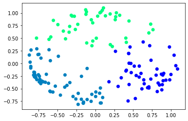
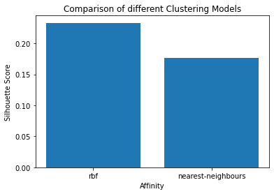

import pandas as pd
import numpy as np
from sklearn.cluster import KMeans
from sklearn.cluster import SpectralClustering
from sklearn import metrics
from scipy.spatial.distance import cdist
from sklearn.preprocessing import StandardScaler, normalize
from sklearn.decomposition import PCA
from sklearn.metrics import silhouette_score
import matplotlib.pyplot as plt
df_vpp = pd.read_csv("./data/parameters_igt_vpp.csv")
df_vpp.describe()
| SubID | LR | Out_Sens | Res_Cons | Loss_Aver | Gain_Impa | Loss_Impa | Deca_Rate | RL_weight | |
|---|---|---|---|---|---|---|---|---|---|
| count | 153.000000 | 153.000000 | 153.000000 | 153.000000 | 153.000000 | 153.000000 | 153.000000 | 153.000000 | 153.000000 |
| mean | 77.000000 | 0.070824 | 0.560575 | 1.329323 | 0.952138 | 0.460940 | -0.720379 | 0.406367 | 0.622995 |
| std | 44.311398 | 0.064683 | 0.111139 | 0.198041 | 0.580621 | 1.185591 | 1.102656 | 0.187483 | 0.066657 |
| min | 1.000000 | 0.027454 | 0.352471 | 0.879707 | 0.193857 | -2.977630 | -2.912838 | 0.042780 | 0.452978 |
| 25% | 39.000000 | 0.038294 | 0.448811 | 1.202790 | 0.528927 | -0.287230 | -1.634716 | 0.256420 | 0.569390 |
| 50% | 77.000000 | 0.050247 | 0.590334 | 1.316736 | 0.760613 | 0.593115 | -0.779120 | 0.439912 | 0.640917 |
| 75% | 115.000000 | 0.078495 | 0.646090 | 1.428836 | 1.292569 | 1.419412 | 0.137599 | 0.565139 | 0.675971 |
| max | 153.000000 | 0.617431 | 0.818137 | 1.938694 | 2.698527 | 2.559126 | 1.583109 | 0.858421 | 0.744017 |
df_pvl_delta = pd.read_csv("./data/parameter_igt_pvl_delta.csv")
df_pvl_delta.head()
| group | SubID | LR | Outcome_Sens | Response_cons | Loss_Aver | |
|---|---|---|---|---|---|---|
| 0 | young | 1 | 0.159011 | 0.487522 | 0.686815 | 0.954498 |
| 1 | young | 2 | 0.064666 | 0.511008 | 1.391790 | 0.295529 |
| 2 | young | 3 | 0.113089 | 0.465141 | 0.918734 | 0.533232 |
| 3 | young | 4 | 0.089273 | 0.500391 | 0.703737 | 0.869859 |
| 4 | young | 5 | 0.233898 | 0.488053 | 0.897867 | 0.511095 |
df_pvl_delta.drop(columns=['SubID'], inplace=True)
df_clustering = df_pvl_delta.drop(columns=['group'])
df_clustering.head()
| LR | Outcome_Sens | Response_cons | Loss_Aver | |
|---|---|---|---|---|
| 0 | 0.159011 | 0.487522 | 0.686815 | 0.954498 |
| 1 | 0.064666 | 0.511008 | 1.391790 | 0.295529 |
| 2 | 0.113089 | 0.465141 | 0.918734 | 0.533232 |
| 3 | 0.089273 | 0.500391 | 0.703737 | 0.869859 |
| 4 | 0.233898 | 0.488053 | 0.897867 | 0.511095 |
# Preprocessing the data to make it visualizable
# Scaling the Data
scaler = StandardScaler()
X_scaled = scaler.fit_transform(df_clustering)
# Normalizing the Data
X_normalized = normalize(X_scaled)
# Converting the numpy array into a pandas DataFrame
X_normalized = pd.DataFrame(X_normalized)
# Reducing the dimensions of the data
pca = PCA(n_components = 2)
X_principal = pca.fit_transform(X_normalized)
X_principal = pd.DataFrame(X_principal)
X_principal.columns = ['P1', 'P2']
X_principal.head(2)
| P1 | P2 | |
|---|---|---|
| 0 | -0.731655 | -0.315896 |
| 1 | 0.224993 | 0.335687 |
# List of Silhouette Scores for rbf method
s_scores_rbf = []
# Finding the optimal number of cluster for the rbf basis appraoch
for k in range(2, 11):
# Building the clustering model
spectral_model_rbf = SpectralClustering(n_clusters = k, affinity ='rbf')
# Training the model and Storing the predicted cluster labels
labels_rbf = spectral_model_rbf.fit_predict(X_principal)
# Evaluating the performance
s_scores_rbf.append(silhouette_score(df_clustering, labels_rbf))
print(s_scores_rbf)
plt.plot(range(2,11), s_scores_rbf, 'bx-')
plt.xlabel('# Clusters')
plt.ylabel('Silhouette Scores')
plt.title('Silhouette Scores for Different Numbers of Clusters')
plt.show()
[0.23319514771763758, 0.23501910959911262, 0.10935987457458961, 0.11405104233143401, 0.10236486535668644, 0.06386373678662807, 0.06812181430343663, 0.061775977050638656, 0.06932771553572042]
# Visualizing the clustering
plt.scatter(X_principal['P1'], X_principal['P2'],
c = SpectralClustering(n_clusters = 3, affinity ='rbf').fit_predict(X_principal), cmap =plt.cm.winter)
plt.show()

# Building the clustering model
spectral_model_nn = SpectralClustering(n_clusters = 2, affinity ='nearest_neighbors')
# Training the model and Storing the predicted cluster labels
labels_nn = spectral_model_nn.fit_predict(X_principal)
# List of Silhouette Scores for nn method
s_scores_nn= []
# Finding the optimal number of cluster for the rbf basis appraoch
for k in range(2, 11):
# Building the clustering model
spectral_model_nn = SpectralClustering(n_clusters = k, affinity ='nearest_neighbors')
# Training the model and Storing the predicted cluster labels
labels_nn = spectral_model_rbf.fit_predict(X_principal)
# Evaluating the performance
s_scores_nn.append(silhouette_score(df_clustering, labels_nn))
print(s_scores_nn)
plt.plot(range(2,11), s_scores_nn, 'bx-')
plt.xlabel('# Clusters')
plt.ylabel('Silhouette Scores')
plt.title('Silhouette Scores for Different Numbers of Clusters')
plt.show()
[-0.004017433335337869, -0.004017433335337869, -0.004017433335337869, -0.0056315831254729895, -0.004017433335337869, -0.004017433335337869, -0.004017433335337869, -0.004821087840386851, -0.004017433335337869]
# List of different values of affinity
affinity = ['rbf', 'nearest-neighbours']
# List of Silhouette Scores
s_scores = []
# Evaluating the performance
s_scores.append(silhouette_score(df_clustering, labels_rbf))
s_scores.append(silhouette_score(df_clustering, labels_nn))
# Plotting a Bar Graph to compare the models
plt.bar(affinity, s_scores)
plt.xlabel('Affinity')
plt.ylabel('Silhouette Score')
plt.title('Comparison of different Clustering Models')
plt.show()
print(s_scores)

[0.23319514771763758, 0.176649994299294]